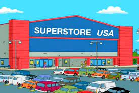

A Data Analysis Project in Power BI containg Executive, Product, Customer, and Map Dashboards. A large varieaty of skills such as data cleaning(trimp,upper),
data modeling (fact tables,Primary Keys), measures (Dax, Sum), visualizations (line charts, Slicers), and some Root Analysis .
An Excel DashBoard containing graphs that describe coffee sales over time, top customers, and sales by Country. This was
achieved by using skills such as data modeling, xlookup,index match, trim, Pivot Tables, slicers, and the if function.
An sql project containing a walmart sales dataset. Contains a number of queries that contain windows functions, aggregates, case, order by, like,
and adding new columns.
This projects purpose it to predit a fraudulent credit card transaction. It contains skill from cleaning, data modeling, linear regression, statistical analysis, matplotlib, and pandas.

A Superstore project that contains a customer and product dashboard. The Dashboards are creating from using a good number of skills
ranging from macros, filtering, sum function, if function, xlookup, pivot tables, bar graphs, conditinal formatting, slicers, and data validation.

Contains a number of Dashboards from a Sales Dataset. It includes tableau skills that range from Data Cleaning, joins, relationship modeling,
filters, parameters, and level of detail. Graphs include pie charts, bar charts, maps, and line charts.